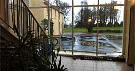

|
Mardi, 14 Décembre 2010 14:28 |
|  |
Grâce au soutien constant de madame Pelabere, présidente du conseil d’administration et conseillère générale du canton de claye-souilly, le projet d’externalisation a pu voir le jour.
Après presque deux ans de travaux la vieille ferme briarde à fait place à un superbe bâtiment dessiné par un architecte, Thierry Guedamour.
Implanté sur un terrain de 8000 m², au cœur d’un petit village briard, il reçoit 12 enfants et adolescents handicapés.
|
| Le groupe adapté accueille une population très carencée avec des pathologies diverses et des troubles envahissants du comportement.
Ces jeunes sont atteints principalement de déficiences intellectuelles moyennes ou sévères, comportant des troubles autistiques, des troubles du comportement mais aussi des troubles alimentaires, du langage et su sommeil.
L’objectif principal est d’évaluer les potentialités et d’accompagner chacun d’entre eux afin qu’ils puissent développer et, ou maintenir des acquis au travers de différents actes de la vie quotidienne.
|
 |
|
Iverny, dernière étape de l’externalisation des 5 sites d’hébergement
|
|
|
Le référent éducatif constitue un projet personnalisé.
Ce référent est porteur du projet, il sera l’interlocuteur des familles, de l’équipe pluridisciplinaire et des partenaires externes. Il est le garant du projet individuel et institutionnel de l’usager accueilli.
Son rôle est de centraliser toutes les informations et l’anamnèse de l’usager dont il assure le suivi. Il se met en rapport avec les différents partenaires internes et externes (familles, travailleurs sociaux, instituteurs…).
A partir des besoins du jeune, des attentes des parents, le projet personnalisé décrit les objectifs et les actions prévues pour chaque jeune.
Les actions proposées étant adaptées aux besoins du jeune, le projet est régulièrement réévalué. Il peut évoluer de manière souple et facile en fonction :
- De son potentiel et de ses capacités
- De ses besoins, motivations et demandes
- De ses prescriptions médicales
- Des attentes de sa famille
|
|
|
|
Mise à jour le Mardi, 15 Février 2011 10:05 |